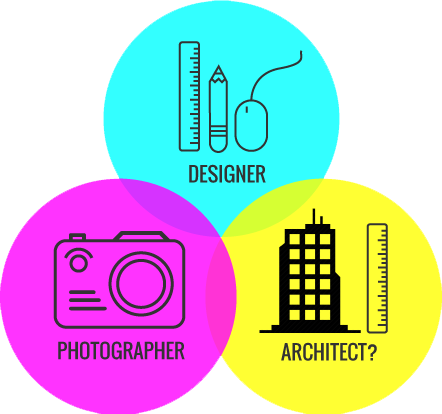

The banner photo above is also the background on my computer’s desktop. It is a snapshot of my dog, Julius, that I quickly snapped early one morning. This photo illustrates one element in my life that brings me joy, delight, and sometimes even surprises. Every time I look at this photo, it makes me smile. It is these wonderful little connections with life and the human experience that I seek to harvest, bring forth, and translate when approaching design. Designing is about recognizing and tapping into that which delight and engage others. And to be able to recognize those factors, you must have a genuine interest for people, their stories, and how they interact with the things that surround them. A user’s encounter with a product, digital or physical, should not just serve a purpose. A well designed product should be like a friend (or a dog) that is a joyous part of one’s life; or at the very least, it should enhance your life by just a little.
This snapshot of Julius not only illustrates where I draw inspiration, but how it came to be also encapsulates my thought on the design process. This photo was somewhat spontaneous, yet all the details work together. I wasn’t trying to force a pretty picture. The light happened to be right and bright where he as laying, the colors worked, and this photo captures my lazy dog exactly as I know him. On my way out the door that morning, I recognized these elements and pulled it all together. This photo simply came together because all the suitable components were there. Still, it takes an observant eye to catch it, frame it, and create it. Good design is not forced. It evolves organically when all the right pieces are brought together. However, it takes a practiced eye and ability for seeing when all those elements are aligned.

Photographer. Architect?. Designer.
My interest in photography at a young age and my decision pursue it as a profession was because I was always fascinated by people and their stories. My camera was my vehicle to get to know them. I love photography, but as I learned and evolved as a creative individual, I grew to love design equally. I am also passionate about technology. I know by adding these two practices to my experience, I will be equipped with even more effective tools to communicate my ideas.
My pursuit of a design position after college brought me to SLA, a top-notch and fast-paced architecture firm in Houston. There, not only did I sharpen my design skills, I gained an interest for architecture. During my time at SLA, I proved that I could continue to pursue to be a designer and an architect. I gained tremendous design skills in creating conceptual work, elevations, and signage for the firm. I learned to design on a team. I embraced and excelled at project management. I built my client facing presentation skills, and added tremendous value.
My experience at SLA pushed me to pursue a graduate degree in architecture. I applied and gained admittance to two excellent graduate architectural program. After some reflection, I made a decision to not pursue architecture because I knew that what I wanted to be was a designer, not an architect. I want to be closer to and have a take in designing products that people use and interact with everyday. I know that UI/UX design is that perfect vehicle. It will allow me to merge all of my varied interests and use all of my abilities to make a larger impact; and most importantly, it will allow me to exercise my passion for people.